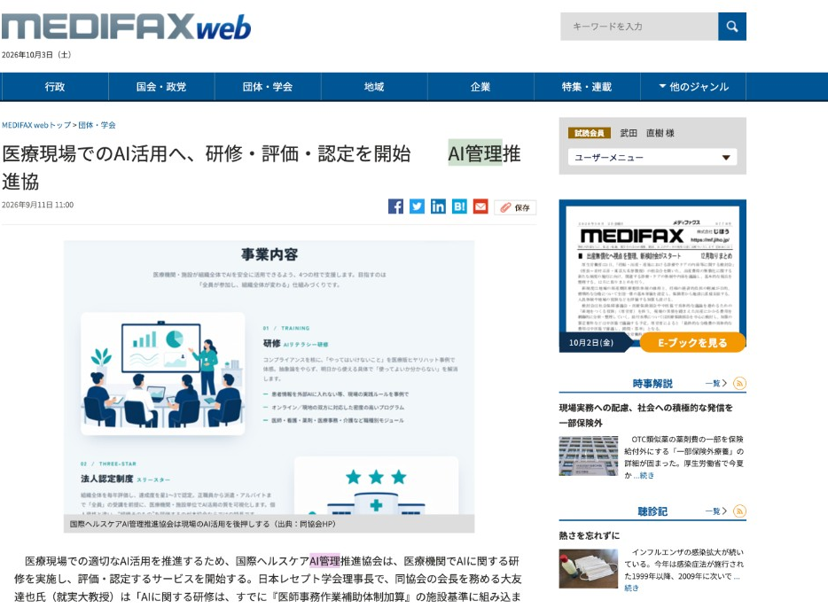

★★★
医療の現場に 正しいAI管理と組織を
一般社団法人 国際ヘルスケアAI管理推進協会
INTERNATIONAL HEALTHCARE AI ASSOCIATION
日本レセプト学会 学術研究会 レセプションパーティー
2026.10.04｜昭和女子大学
ABOUT US
医療・福祉のAI活用を、「安全に」根づかせる。
医療・福祉分野におけるAIの適正かつ安全な活用を推進する一般社団法人です。
TRAINING
研修
INDIVIDUAL
個人認定
医療AIガバナンス管理士
CORPORATE
法人認定
スリースター
AIを「推進」するのではなく、「管理」する団体です。
IN THE PRESS
医療専門メディアに掲載されました。

「医療現場でのAI活用へ、
研修・評価・認定を開始」
医療専門メディアが、当協会の研修・評価・認定の取り組みを報じました。
日本レセプト学会 理事長・大友会長のコメントも掲載されています。
MEDIFAX web ｜ 株式会社じほう
2026.09.11 団体・学会
誰でもAIが使える時代になりました。
CONVENIENCE
便利になった
文書作成・議事録・調べものが、
個人の手元ですぐにできる。
HOWEVER
その一方で
医療機関には、
患者の個人情報が大量にある。
「知らなかった」では、済まされない。
01
誤情報
AIの出力には誤りが含まれる。
確認しないまま使えば、
医療の質に直結する。
02
情報漏洩
患者情報を外部AIに入力すれば、
それだけで漏洩のリスクが生じる。
03
責任の所在
問題が起きたとき、
誰が責任を負うのか。
曖昧なままの導入が
最大のリスク。
個人の責任から、組織の責任へ。｜病院主導のスタッフ教育を
組織と個人、2つの側面から支えます。
★★★
FOR ORGANIZATIONS｜組織向け
法人認定制度 スリースター
医療機関・施設の全体を毎年評価し、
星1〜3で認定。弱点と改善策まで返却します。
評価領域
FOR INDIVIDUALS｜個人向け
医療AIガバナンス管理士
院内ルール・法令・インシデント対応を踏まえ、組織のAIガバナンスを統括・助言する人材を認定します。
2026年度は講習受講で認定 2027年より試験制へ
THREE STAR
組織全体を評価する、法人認定制度。
★
組織診断10項目のうち
8項目以上を達成
★★
10項目すべてを達成し、
全職員（派遣・アルバイト含む）の
受講が完了
★★★
★2に加え、
改善・運用の継続実績あり。
三ツ星医療機関として公開
4つの評価領域
理解
受講率・テスト正答率
ルール
利用ルールの文書化
対応
事故時の報告フロー
体制
管理責任者と
見直しの仕組み
毎年、再評価。評価して終わりではなく、改善策まで返します。
MEDICAL AI GOVERNANCE MANAGER
組織のAIガバナンスを導く人材を、認定します。
- 対象
- どなたでも受講可能
（想定：看護部長・事務長・薬剤部長など部門長クラス） - 身につくこと
- 院内ルール・法令・インシデント対応を踏まえ、
「これは入力してよいか」を正しく判断し、組織として導く力
認定の流れ
2026年度
講習受講で認定（プレ資格）
2027年〜
試験による認定
補足：認定書はオンラインで発行
AI活用の次はAI管理の仕組みへ
GENERAL
一般的なAI研修
- 使い方・活用術が中心
- ガバナンス管理は手薄
OUR APPROACH
当協会
- ★ガバナンス管理に特化
- ★個人ではなく、組織全体を評価
- ★評価から改善まで伴走
- ★海外の医療AI事例・国際動向を反映
BOARD MEMBERS
医療・経営・AIの現場を知るメンバーが支えます。

大友 達也
会長
日本レセプト学会 理事長
就実大学 教授

小熊 英國
理事
グロービス経営大学院
教授

清水 隆明
理事
姫路獨協大学 教授

佐瀬 雄治
理事
北海道情報大学 准教授

鈴木 崚平
理事・事務局

副田 渓
理事・講師／監修
AI IN PRACTICE
最前線でAIを使う実践者が、理事にいます。
その理事・副田が代表を務める株式会社メディキャンバスは、開発もAIを中心に進めています。
PATIENT APPS
患者向けのAIアプリ
医療機関と連携し、患者を支えるAIアプリを開発。
診察サポートや患者コミュニティなど、患者の毎日に寄り添うサービスを届けている。
HOSPITAL OPERATIONS
医療機関向けの業務効率化アプリ
院内業務をAIで効率化・自動化するアプリを開発。
記録・共有・事務作業の負担を減らし、現場が患者と向き合う時間を生み出す。
「自社でアプリを作りたい」「AIで自動化したい」医療機関の方は、ぜひ一度ご相談ください。
ADVISORS
AIの法律と、医療経営のプロフェッショナル。

AI×法律
増田 雅史
森・濱田松本法律事務所 パートナー弁護士
立教大学大学院 人工知能科学研究科 客員教授
『生成AI法律入門』『生成AIの法務』ほか

医療経営×組織変革
坪 茂典
社会医療法人愛仁会 参与
オフィス62プランニング 代表
『医療の品質管理推進読本』ほか
LIMITED OFFER
整理券を配布しています。
CORPORATE
医療法人向け認定制度
先着50法人
INDIVIDUAL
医療AIガバナンス管理士
先着上限なし
気になった方は、ぜひお立ち寄りください。
配布場所【配布場所】
お問い合わせは10月8日（木）から
一般社団法人 国際ヘルスケアAI管理推進協会